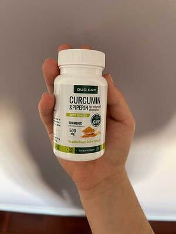

Fapt interesant: nu trebuie să fii specialist în domeniul nutriției pentru a folosi o metodă eficientă de a pierde în greutate. Este mai fiabil decât să plătiți o mulțime de bani pentru a consulta specialiștii despre dietele scumpe, pentru care o persoană care lucrează în mod normal nu are timp. Cu toate acestea, merită de a întreba…
Înainte de a începe să vă familiarizați cu metoda de a scăpa de kilogramele în plus, să stabilim mai întâi dacă vi se potrivește cu adevărat. Cu toate acestea, dacă decideți să faceți acest lucru, veți obține o formulă simplă de scădere în greutate, ale cărei rezultate au uimit specialistul meu.
Un exemplu viu al unei astfel de persoane sunt eu - Dana Băiceanu. Nu sunt specialist în domeniul nutriției. Lucrez ca contabil, iar în timpul liber conduc un blog. Niciodată nu am urmat diete sau am făcut sport. Cu toate acestea, acum cântăresc 51 kg cu o înălțime de 163 cm și am o figură ca un model. Nu trebuie să-mi fac griji pentru ceea ce mănânc și, fără efort suplimentar, greutatea mea rămâne aceeași.
Problema mea a fost o glandă tiroidă mărită și lipoliza slabă a grăsimilor. Specialiştii mi-au spus într-o singură voce: "Nu veți putea niciodată să pierdeți în greutate".
Am copii și vreau să fiu sănătoasă cel puțin pentru ei! Mi-a părut rău să cheltuiesc o avere pe liposucție, așa că am decis să găsesc o modalitate eficientă de a pierde în greutate. Am încercat de mai multe ori produsele promovate la televizor, dar nu a ieșit nimic. Producătorii acestor produse ne-au hrănit doar cu promisiuni, iar rezultatul pierderii în greutate a fost slab vizibil.
Din când în când, mergeam în Japonia din motive profesionale. Într-una din aceste călătorii, am dat peste un produs popular de pierdere în greutate. Dar nu l-am putut comanda pentru că granițele erau închise. Recent, a început să fie furnizat direct și de atunci a devenit metoda mea de salvare în lupta împotriva unui burte lăsate și a șoldurilor proeminente. Desigur, nu am pierdut în greutate într-un moment. Dar, după 4 săptămâni, pantalonii au început să-mi fie largi, iar pe cântare am văzut o cifră cu 7 kg mai mică decât de obicei! Acest rezultat a depășit așteptările mele cele mai îndrăzneţe.
Recent, una dintre prietenele mele, după ce a văzut rezultatele mele, m-a întrebat: "Poți împărtăși contactele specialistului care ţi-a făcut o liposucție atât de uimitoare?». Am fost surprinsă, pentru că nu am făcut liposucție... În fiecare dimineață am repetat un exercițiu simplu care a durat doar două minute - am folosit ! Dacă doriți să vedeți cele mai eficiente produse pentru pierdere în greutate pe care le-am folosit și care nu necesită diete speciale sau un abonament la sală, dar dau efecte vizibile - puteți lua parte la extragerea reducerilor: SITE-UL OFICIAL ESTE AICI.

Care este diferența dintre acest produs de pierdere în greutate și produsele care vă pierd timpul și banii?
Diferența este imensă!
Sunt sigură de acest lucru, pentru că eu însumi am pierdut în greutate numai datorită lui (fără diete și masaje) - minus 20 kg. Am început cu o greutate de 71 kg, iar după trei luni greutatea a scăzut la 51 kg! Sunteţi de acord, aceasta este o diferență foarte mare. Și probabil vă este interesant:
Acest produs mă poate ajuta să pierd în greutate?
Trebuie să înțelegeți că obiectivul dvs. nu este doar să pierdeți în greutate, ci să obțineți o siluetă subțire și flexibilă. Acest lucru înseamnă că produsul de pierdere în greutate ar trebui să aibă 4 proprietăți principale:
- Să vă ajute să vă acceleraţi metabolismul cu 98% și să eliminați toxinele din intestine, deoarece ele blochează mecanismele de scădere în greutate și fac să vă simțiți obosiți și apatici.
- Să vă pună corpul pe o dietă sănătoasă pentru pierderea în greutate. Nu folosiți niciodată metode aspre, cum ar fi pastilele thailandeze care conțin ouă de vierme. Procesul de scădere a greutății ar trebui să ajute organismului și să nu-l populeze cu paraziți care otrăvesc organele interne.
- Să elimine grăsimea și celulita în zonele critice - abdomen, coapse și fese și să asigure o pierdere constantă în greutate, cel puțin 7 kg pe lună.
- Pentru a vă face mușchii să funcționeze chiar și atunci când vă aflați în repaus și acesta este pentru mine cel mai mare avantaj al produsului !
Eu numesc aceste patru principii de pierdere în greutate. Absența a cel puțin unui dintre ei în formula de pierdere în greutate este un obstacol serios în calea pierderii în greutate. Singurul lucru care m-a împiedicat să încerc când eram în Japonia a fost o atitudine sceptică față de această metodă.
Comandați cu o reducere de 50%
Mai mult, am avut deja o experiență tristă de combatere a excesului de greutate, am urmat mai multe diete. Chiar dacă pierdeam puțină greutate, kilogramele se întorceau. Mi-a fost frică de o altă dezamăgire, dar în același timp am fost îngrijorată de sănătatea mea. Situația cu excesul de greutate și colesterolul ridicat s-a înrăutățit.
După ce am trecut pe această cale, înțeleg că atunci când alegeți o metodă de slăbit, trebuie să acordați atenție celor patru elemente pe care le-am menționat deja mai sus. Puteți constata că metoda pe care ați ales-o nu îndeplinește toate criteriile! Sau produsul pe care l-ați ales pentru pierderea în greutate nu conține ingrediente active. Sau calitatea produsului în sine este foarte scăzută și nu merită banii cheltuiți.
Ceea ce mi se pare destul de evident acum necesită de fapt o cunoaștere profundă a anatomiei umane și a proceselor metabolice ale depozitelor de grăsime.
Dar nu vă faceți griji! Nu trebuie să plătiți pentru liposucție sau serviciile unui specialist în domeniul nutriției!
Astăzi cântăresc aproape jumătate, am pierdut 20 kg! Ca să fiu sinceră, mama mea nu m-a recunoscut!
Pentru ușurința înțelegerii procesului, am colectat toate informațiile într-un singur loc: despre singura modalitate eficientă de a pierde în greutate, recomandată de cei mai renumiți specialişti din SUA! Gary Walbert, Andrew Collier, Elizabeth Hopkins, Joe Snowman - aceste nume înseamnă ceva pentru dvs.? Aceştia sunt genii în lupta împotriva excesului de greutate!
Totul ce este scris pe această pagină a fost verificat de mine personal. Ca orice persoană modernă, lucrați, aveți copii și multe altele și, ca orice persoană modernă, suferiți catastrofal din cauza lipsei de timp și pur și simplu nu puteți tăia o jumătate de oră din programul dvs. pentru lucruri, precum gătitul alimentelor sănătoase sau sala de sport.
Nu promit miracole. Pur şi simplu am de gând să împărtășesc cu voi un produs de pierdere în greutate mare, care poate face minuni. Sper că nu vă va fi frică și veţi decide în acest stadiu.
Acesta este TOTUL ce trebuie pentru a pierdere rapid în greutate.
Dacă doriți să pierdeți rapid greutatea și să scăpați de celulită - acest produs vă va ajuta în acest sens.
Nu toată lumea crede în simplitatea acestei metode.
Dar a fost deja testat! Vă sugerez să citiți recenziile persoanelor care au trecut prin asta:
Elena, 31 de ani
Mihai, 27 de ani
Andrea, 27 de ani
Victoria, 34 de ani
Adrian, 51 de ani
Bianca, 48 de ani
Ofelia, 55 de ani
Am descoperit produsul viitorului!
Când am început să folosesc acum trei luni, am încercat să urmez cu atenție instrucțiunile. Nu am scăpat nicio zi. Principalul lucru aici este regularitatea și coerența.
Am reușit! Acesta este un produs excelent pentru combaterea depozitelor de grăsime.
Am vorbit cu mulți oameni după pierdere în greutate cu și toți sunt mulțumiți de rezultate. Comentariile lor pot fi găsite pe resursa mea de Internet.
Participați la sondaj:
Câte kilograme ați reușit să pierdeți datorită ?
Au votat 19864 oamenii
Câte kilograme ați reușit să pierdeți datorită ?
Au votat 19864 oameni
Așteptați!
PENTRU ULTIMA DATĂ, VĂ VOI SPUNE CÂTEVA FAPTE DESPRE PE CARE NIMENI ALTCINEVA NU VĂ VA SPUNE!
Pentru a vă ajuta să luați decizia corectă, voi adăuga câteva recomandări:
- Fixează-ți greutatea zilnic. Datorită acestor note, veți vedea rezultatele.
- Nu uitați niciodată să luați produsul - câte 1 capsulă în timpul meselor de 1-3 ori pe zi.
- Beţi cel puțin 1,5 litri de apă potabilă pe zi, accelerează perfect pierderea în greutate.
În extragerea de mai jos, aveți o oportunitate unică de a câștiga cu o reducere până la 50%! Producătorul oferă o garanție a eficienței. Și, ca să fiu sinceră, ACEST LUCRU mi-a schimbat calitatea vieții. Încercați - va schimba, de asemenea, calitatea vieții voastre.
Ce mai așteptați?
ATENŢIE! Feriți-vă de falsuri!
participaţi la extragerea reducerilor de până la 50%.
Promoția se termină
De au rămas pachete cu reducere:
23 buc.
Dragă Dana, specialistul meu mi-a spus, de asemenea, că nu voi pierde în greutate din cauza problemelor cu glanda tiroidă. La sfatul dvs., am comandat și acum pierd în greutate tot timpul! Nu m-am gândit niciodată că pierderea în greutate poate fi atât de ușoară
Carolina, sunt fericită. Da, experții nu ne spun că pierderea în greutate poate fi rapidă, nici măcar nu înțeleg de ce. La urma urmei, este bine pentru sănătatea noastră. Și cât de mult ați reușit să pierdeți în greutate, dacă nu este un secret? :)
Deja 11 kg și am băut doar 8 săptămâni. Soțul meu râde că voi dispărea în curând, haha.
Cât costă? Dacă funcționează cu adevărat, voi lua cu orice preț !!!!!!
Este scris că există o extragere, participați la ea și veți obţine o reducere.
Și bărbaţii îl pot folosi?
Desigur, soțul meu ia în prezent și, de asemenea, pierde în greutate.
Am pierdut 21 kg, acum este timpul pentru a merge la sala de sport :)
Am început azi. Sper să slăbesc până la ziua de naștere a soțului meu. Soacra va fi surprinsă: D
Pierzi în greutate pentru soacra ta sau pentru tine?
Am riscat și am comandat, după aproximativ 4 săptămâni am pierdut 9 kg, pielea, părul și unghiile s-au îmbunătățit foarte mult. Voi scrie aici când voi termina cursul.
Va fi capabil să elimine burta după sarcină?
Am început să-l folosesc de îndată ce am încetat să alăptez. Am reușit să pierd 22 kg cu ajutorul . Îl recomand. Fiul meu are deja 2 ani, iar greutatea mea este încă la același nivel :)
Sunt alergic la multe produse de scădere în greutate, așa că am căutat un produs fără substanțe chimice. conține numai ingrediente naturale de origine vegetală: curcuma, piper negru și ghimbir.
Un alt miracol. Hai să verificăm. Soția mea și cu mine vom începe luni.
Rezultat excelent. Mai bine decât sala de sport cu 100.000% !!!!!
Și eu cred în același mod:) de unde să iau timp pentru sala de sport, în cazul în care am lucru și copii
Cea mai bună parte este că nu trebuie să urmezi diete. Dacă vrei ceva dulce - mănânci fără remușcări. Iar greutatea scade de la sine.
După terminarea cursului, au apărut mușchi și ușurare !!!!
Cea mai bună mântuire din viața mea. Sunt uimită că produsul este atât de accesibil cu o astfel de eficiență!
Doamnelor, sunteți doar bomboane. Poate cineva a luat în timpul menopauzei?
Mama mea a luat acest produs, are 61 de ani:) aceasta este o vârstă minunată! Ea a dat jos 11 kg, iar colesterolul ei a revenit în cele din urmă la normal.
Cea mai bună soluție a problemei, am pierdut 13 kg și acum nu am celulită pe picioare, deși am luptat mult timp
un produs bun, este dificil de a găsi astfel de lucruri bune acum
COMANDAȚI CU O REDUCERE
Promoția este valabilă numai până de: